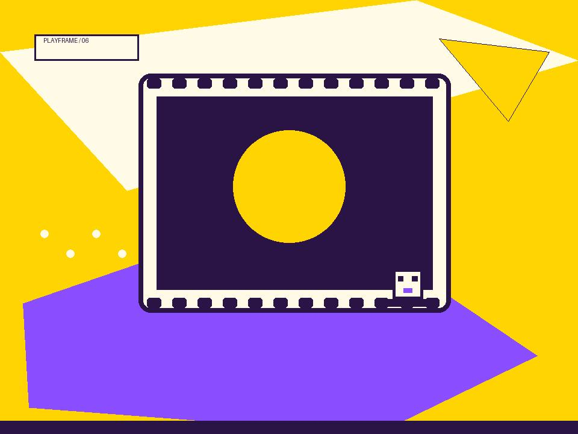

Neugier ist ein Skill.
Du musst keine Genre-Liste auswendig kennen. Ein Film darf dich überraschen, verwirren oder zum Lachen bringen. Alle Reaktionen sind ein Anfang für ein Gespräch.
LEVEL 03 / DIE STORY
PLAYFRAME beginnt mit einer Frage: Was passiert, wenn Menschen, die gern spielen, Kurzfilme nicht nur ansehen, sondern als Einladung zum Weiterdenken verstehen?

Wie alles anfing
PLAYFRAME ist ein fiktives Festival, das aus einer Beobachtung entstanden ist: Film und Games sprechen oft über ähnliche Dinge, aber ihre Communities begegnen sich nicht immer. Beide bauen Welten, setzen Regeln, lassen uns Entscheidungen fühlen und bringen Menschen zusammen, die vorher Fremde waren.
Die Idee für ein gemeinsames Wochenende entstand bei einem Filmabend, an dem nach dem Abspann niemand sofort nach Hause wollte. Stattdessen wurde über die Figuren diskutiert, über das Ende, über die Frage, was man selbst anders entschieden hätte. Genau dieses Gefühl – noch kurz im Raum bleiben und gemeinsam weiterdenken – soll PLAYFRAME in ein ganzes Festival übersetzen.
Unser kleines Manifest
Du musst keine Genre-Liste auswendig kennen. Ein Film darf dich überraschen, verwirren oder zum Lachen bringen. Alle Reaktionen sind ein Anfang für ein Gespräch.
Gamer:innen sind keine einzelne Zielgruppe mit einer einzigen Lieblingskonsole. Wir möchten unterschiedliche Spielstile, Erfahrungen und Perspektiven sichtbar machen.
Hinter jedem kurzen Film stecken viele Entscheidungen und oft kleine Teams. Wir wollen nicht nur die fertigen Welten feiern, sondern auch die Menschen und Arbeit dahinter.
Die Collage als Bildsprache
Unser visuelles Prinzip ist die Collage: Ausschnitte aus Filmstreifen, Sticker, Raster und handgemachte Papierkanten liegen nebeneinander, ohne ihre Ecken zu verstecken. So wie ein Spiel aus vielen kleinen Bausteinen entsteht, wächst auch ein Festival aus unterschiedlichen Stimmen.
Das Lila erinnert an den dunklen Kinosaal und an digitale Nachtwelten. Das warme Hell lässt Luft und Lesbarkeit hinein. Gelb markiert wichtige Momente, während Violett wie ein leuchtender Cursor den Blick weiterführt. Die Formen dürfen sich überlagern – der Text bleibt dabei klar und gut lesbar.
Dein Part im Abspann
Ein Festival lebt davon, dass Menschen ihre eigenen Gedanken mitbringen. Vielleicht entdeckst du einen Film, den du jemandem zeigen möchtest. Vielleicht lernst du eine neue Spielidee kennen. Oder du gehst einfach mit einer Frage nach Hause, die vorher noch nicht da war.
Das ist der Moment, an dem PLAYFRAME für uns funktioniert: wenn aus einem Bildschirm eine Begegnung wird und aus einem einzelnen Film eine gemeinsame Erinnerung.
Das Programm ansehen